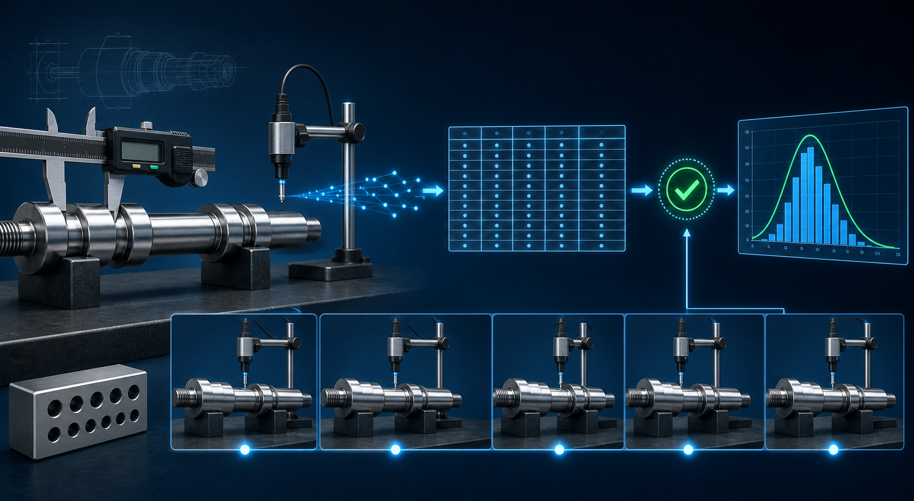
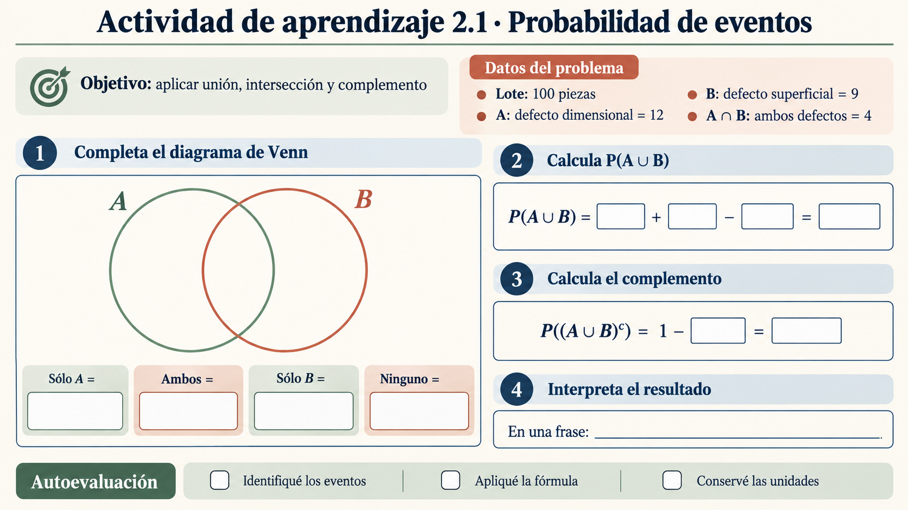
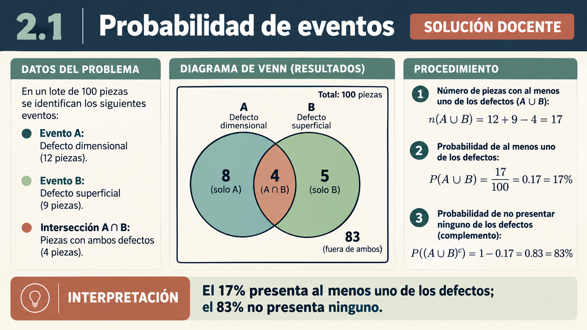
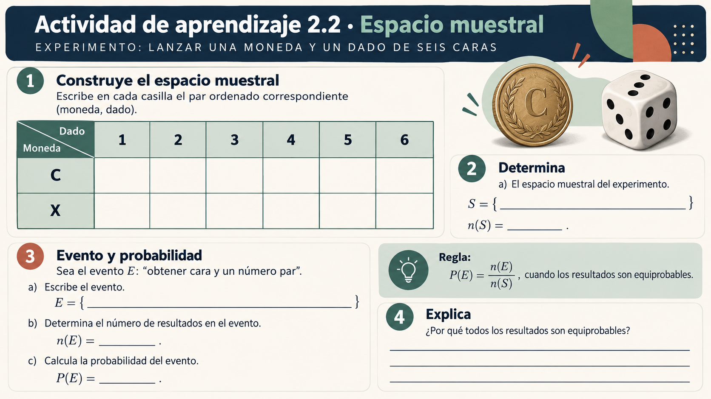
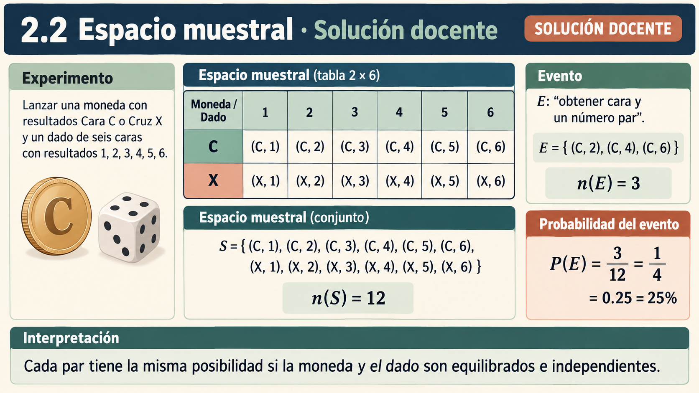
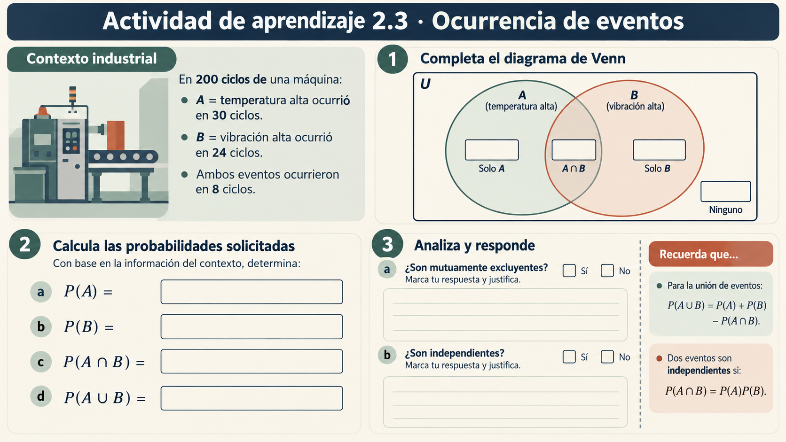
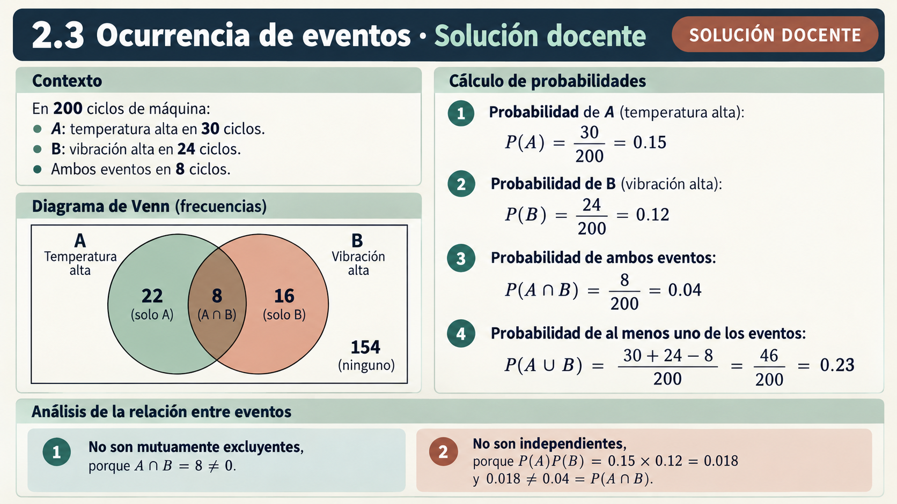

Aplicarás la probabilidad y la estadística para analizar datos, resolver problemas de ingeniería e interpretar información útil para la toma de decisiones.
Criterios de evaluación
Primer parcial
80% Examen 20% Trabajo en clase
Segundo parcial
80% Examen 20% Trabajo en clase
Tercer parcial
80% Examen 20% Trabajo en clase
La evaluación diagnóstica identifica conocimientos previos y no forma parte de los porcentajes de los parciales.
📝 Evaluación diagnóstica
10 preguntas sobre conocimientos matemáticos y estadísticos previos. Una sola oportunidad; si abandonas después de comenzar, se registrará 0.
Contenido del curso
1
Estadística descriptiva
Población, muestra, datos, tendencia central, dispersión, frecuencias, cuantiles y gráficos.
· Usa las flechas del teclado o los controles para avanzar.
Unidad 1 · Fundamentos para estudiar datos
Selecciona una ventana de aprendizaje
Cada ventana reúne teoría, ejemplos y actividades de un solo tema.
1.1
CONCEPTOS FUNDAMENTALES
Población y muestra aleatoria
En ingeniería rara vez es posible medir todos los elementos de interés. La estadística permite estudiar una parte de ellos y utilizar la información obtenida para describir o inferir características del conjunto completo. Montgomery y Runger presentan este proceso como un puente entre los datos observados y la toma de decisiones de ingeniería; Gutiérrez Pulido destaca que la validez del análisis depende de que los datos representen realmente el proceso.
PoblaciónConjunto completo de unidades sobre las que se desea obtener información. Puede ser finita —por ejemplo, 2 000 engranes de un lote— o conceptual/infinita, como todas las mediciones futuras producidas por un proceso estable.
MuestraSubconjunto de unidades u observaciones extraído de la población. Su tamaño se representa por n; el tamaño de una población finita suele representarse por N.
ParámetroMedida numérica que describe a la población, como la media μ, la desviación estándar σ o una proporción p. Normalmente es desconocida.
EstadísticoMedida calculada con la muestra, como la media x̄, la desviación estándar s o la proporción p̂. Se utiliza para estimar el parámetro.
Población → selección aleatoria → muestra → estadístico → inferencia sobre el parámetro
La aleatoriedad pertenece al método de selección. Una muestra no se vuelve aleatoria solo por contener piezas variadas.
¿Qué significa muestra aleatoria?
En un muestreo aleatorio simple, cada muestra posible del mismo tamaño tiene la misma oportunidad de ser seleccionada. Esto reduce el sesgo introducido por quien recolecta los datos y permite utilizar modelos de probabilidad para cuantificar la incertidumbre. Sin embargo, la aleatoriedad no garantiza que una muestra particular reproduzca perfectamente a la población; garantiza que el procedimiento no favorezca sistemáticamente ciertos resultados.
Ejemplo aplicado
Inspección dimensional de ejes. Una línea produjo 1 200 ejes durante un turno. La población son los 1 200 ejes; el diámetro es la variable; μ es el diámetro promedio verdadero del lote. Si se numeran las piezas y un generador selecciona 40 números sin reemplazo, esas 40 piezas forman una muestra aleatoria. Su media x̄ estima μ, pero no es idéntica a él.
Tipos frecuentes de selección
Aleatoria simple: se seleccionan unidades mediante números aleatorios.
Sistemática: se elige un inicio aleatorio y después cada k-ésima unidad.
Estratificada: se divide la población en grupos relevantes —turnos, máquinas o proveedores— y se toma una muestra de cada grupo.
Por conglomerados: se seleccionan grupos completos cuando las unidades están organizadas naturalmente.
Error común: medir únicamente las piezas que están más cerca, las que pasan al inicio del turno o las que parecen defectuosas produce una muestra por conveniencia y puede distorsionar las conclusiones.
Actividad breve
Una planta tiene tres tornos que producen 50%, 30% y 20% de sus piezas. Diseña una muestra de 30 piezas que represente a los tres tornos. Explica por qué una muestra estratificada sería preferible a tomar las primeras 30 piezas disponibles.
1.2
PLANEACIÓN Y MEDICIÓN
Obtención de datos estadísticos
Un análisis estadístico no puede corregir por completo datos mal definidos o recolectados con sesgo. Por ello, la obtención de datos comienza antes de medir: primero se formula la pregunta, después se define qué observar, cómo seleccionarlo, con qué instrumento medirlo y cómo verificar la calidad del registro.
Fuentes de datos
Datos observacionalesSe registra el proceso tal como ocurre, sin asignar deliberadamente tratamientos. Son comunes en producción, mantenimiento y registros históricos.
Datos experimentalesSe modifican de manera planeada uno o más factores para estudiar su efecto sobre una respuesta. Requieren aleatorización, repetición y control.
Fuentes primariasMediciones obtenidas específicamente para el estudio: sensores, inspecciones, encuestas o pruebas.
Fuentes secundariasRegistros existentes: bases de producción, bitácoras, reportes, sistemas ERP o documentos institucionales.

Un dato útil conserva la relación entre la pieza medida, el instrumento, las condiciones, el momento de medición y el registro final.
Plan de recolección
Definir el objetivo. Convertir el problema en una pregunta concreta: ¿qué se necesita decidir o comparar?
Delimitar población y unidad de análisis. Precisar lugar, periodo, proceso y elemento que genera cada observación.
Definir variables operacionalmente. Indicar propiedad, unidad, método, resolución y criterio de aceptación.
Diseñar el muestreo. Establecer cuándo, dónde, cuántas unidades y mediante qué mecanismo serán seleccionadas.
Verificar el sistema de medición. Comprobar calibración, resolución, repetibilidad, reproducibilidad y estabilidad.
Diseñar el formato de registro. Incluir identificador, fecha, turno, máquina, operador, instrumento, valor y observaciones.
Realizar una prueba piloto. Detectar ambigüedades, datos imposibles, campos faltantes y dificultades operativas.
Recolectar y validar. Revisar rangos, unidades, duplicados, valores faltantes y trazabilidad sin alterar silenciosamente los datos originales.
Clasificación básica de variables
CualitativasDescriben categorías. Pueden ser nominales —tipo de falla— u ordinales —severidad baja, media o alta—.
CuantitativasExpresan cantidades. Son discretas cuando cuentan eventos y continuas cuando miden magnitudes como diámetro, presión o temperatura.
Ejemplo de formato mínimo
Objetivo: evaluar la variación del diámetro de un eje. Variable: diámetro exterior en mm, resolución de 0.01 mm. Población: ejes producidos por tres tornos durante el turno matutino. Muestra: cinco piezas por torno cada hora, con inicio aleatorio. Registro: pieza, torno, hora, operador, calibrador, medición y observaciones.
Principio de calidad: conservar el dato original. Si se corrige un registro, debe mantenerse evidencia de qué cambió, quién lo modificó y por qué. Eliminar valores atípicos solo porque “se ven extraños” puede ocultar una falla real del proceso.
Actividad de aplicación
Diseña una hoja de recolección para estudiar el tiempo de llenado de un cilindro neumático. Incluye objetivo, población, unidad de análisis, variable, unidad, instrumento, frecuencia, tamaño de muestra y cinco controles para validar los datos.
1.3
RESUMIR E INTERPRETAR
Medidas de tendencia central
Las medidas de tendencia central resumen un conjunto de observaciones mediante un valor representativo. No sustituyen la revisión de la distribución ni de la variabilidad: dos procesos pueden tener el mismo centro y comportamientos completamente diferentes. Gutiérrez Pulido y Montgomery recomiendan interpretar estas medidas junto con el contexto del proceso, la forma de la distribución y la presencia de valores atípicos.
∑MediaUtiliza todos los valores. Es informativa en datos aproximadamente simétricos, pero sensible a observaciones extremas.
↔MedianaOcupa la posición central después de ordenar los datos. Es resistente a valores extremos y distribuciones asimétricas.
▥ModaEs el valor o categoría con mayor frecuencia. Puede no existir o puede haber más de una.
Media aritmética
La media de una población se representa con μ; la media calculada en una muestra se representa con x̄. Se obtiene sumando las observaciones y dividiendo entre su cantidad.
x̄ = (Σxᵢ) ÷ n | μ = (Σxᵢ) ÷ N
Ejemplo 1 · Efecto de un valor extremo
Los tiempos de reparación, en minutos, son: 12, 13, 13, 14, 15 y 33.
Sumar: 12 + 13 + 13 + 14 + 15 + 33 = 100.
Dividir: x̄ = 100 ÷ 6 = 16.67 min.
Interpretar: el tiempo de 33 min eleva la media; por eso también se necesita calcular la mediana.
Mediana
Primero se ordenan los valores. Si n es impar, la mediana es la observación central; si n es par, es el promedio de las dos observaciones centrales.
n impar: posición (n + 1) ÷ 2 | n par: promedio de las posiciones n ÷ 2 y (n ÷ 2) + 1
Continuación del ejemplo 1
Los datos ya están ordenados: 12, 13, 13, 14, 15, 33. Como n = 6, se promedian las posiciones 3 y 4:
Mediana = (13 + 14) ÷ 2 = 13.5 min
La mediana describe mejor un tiempo típico cuando el valor 33 es excepcional.
Moda
La moda identifica el resultado más frecuente. En los tiempos anteriores, 13 min aparece dos veces y es la moda. En control de calidad puede utilizarse también con datos cualitativos, por ejemplo, para identificar el tipo de defecto más frecuente.
Media ponderada
Cuando los grupos no tienen el mismo tamaño, sus medias no deben promediarse directamente. Cada promedio se multiplica por su número de observaciones.
x̄p = Σ(wᵢx̄ᵢ) ÷ Σwᵢ
Ejemplo 2 · Producción de tres máquinas
La máquina A produjo 20 piezas con media de 10.1 mm; B produjo 30 con media de 9.8 mm; C produjo 50 con media de 10.0 mm.
Ponderar: 20(10.1) + 30(9.8) + 50(10.0) = 996.
Total: 20 + 30 + 50 = 100 piezas.
Media global: 996 ÷ 100 = 9.96 mm.
Datos agrupados
Cuando solo se conocen intervalos y frecuencias, la media se aproxima usando la marca de clase mᵢ, que es el punto medio de cada intervalo.
x̄ ≈ Σ(fᵢmᵢ) ÷ Σfᵢ
Tiempo (min)
Frecuencia fᵢ
Marca mᵢ
fᵢmᵢ
0–4
3
2
6
5–9
5
7
35
10–14
2
12
24
Total
10
—
65
Ejemplo 3: la media agrupada aproximada es 65 ÷ 10 = 6.5 min. Es una aproximación porque se supone que las observaciones de cada intervalo se concentran en su punto medio.
¿Qué medida conviene utilizar?
Situación
Medida recomendada
Razón
Datos cuantitativos simétricos, sin extremos importantes
Media
Utiliza toda la información numérica.
Ingresos, tiempos de falla o datos sesgados
Mediana
Resiste la influencia de valores extremos.
Categorías o valor más común
Moda
No requiere una escala numérica.
Grupos con tamaños distintos
Media ponderada
Respeta la contribución real de cada grupo.
Error frecuente: informar solo la media. Antes de concluir, ordena los datos, busca valores atípicos, identifica asimetría y acompaña el centro con una medida de dispersión.
La moda es “fuga”. Media y mediana no son apropiadas para categorías nominales.
6. Decisión de ingeniería
Dos procesos tienen media de 50 mm. ¿Es suficiente para afirmar que trabajan igual?
Comprobar respuesta
No. Deben compararse dispersión, forma, valores atípicos, estabilidad y especificaciones.
Unidad 2 · Probabilidad
Selecciona una ventana de aprendizaje
Abre un tema a la vez para estudiar sin perderte en una página extensa.
2.1
FUNDAMENTOS
Probabilidad de eventos
Un evento es un conjunto de resultados de un experimento aleatorio. Cuando todos los resultados elementales tienen la misma posibilidad, la probabilidad de un evento se obtiene comparando sus casos favorables con el total de resultados del espacio muestral.
Evento simpleContiene un solo resultado del experimento.
Evento compuestoReúne dos o más resultados posibles.
Unión A ∪ BOcurre A, ocurre B o suceden ambos.
Complemento AᶜIncluye todos los resultados en los que A no ocurre.
Los diagramas de Venn permiten reconocer qué resultados se incluyen en una operación. El rectángulo representa el espacio muestral S; cada círculo representa un evento. La región resaltada indica los resultados que cumplen la condición.
a) Unión (OR)
AB
A ∪ B: “A o B”
Incluye los resultados que están en A, en B o en ambos. En probabilidad, la palabra “o” es inclusiva.
Ejemplo: una pieza tiene defecto dimensional o superficial; si presenta ambos, también pertenece a la unión.
b) Intersección (AND)
AB
A ∩ B: “A y B”
Contiene solamente los resultados que pertenecen simultáneamente a A y a B. Corresponde a la zona donde se traslapan los círculos.
Ejemplo: una pieza presenta al mismo tiempo defecto dimensional y defecto superficial.
c) Complemento (NOT)
SAAᶜ
Aᶜ: “no A”
Reúne todos los resultados del espacio muestral S que no pertenecen a A. El evento y su complemento cubren todo S.
Ejemplo: si A significa “pieza con defecto dimensional”, Aᶜ significa “pieza sin ese defecto”.
Cómo elegir la operación: usa la unión cuando se acepte cualquiera de dos condiciones; la intersección cuando deban cumplirse ambas; y el complemento cuando se solicite que un evento no ocurra.
Lámina de aprendizaje · Resuelve

Completa las regiones del diagrama, calcula la unión y expresa el resultado como fracción, decimal y porcentaje.
🔒 Mostrar solución docente del tema 2.1

2.2
RESULTADOS POSIBLES
Espacio muestral
El espacio muestral, representado por S, contiene todos los resultados posibles de un experimento. Puede construirse mediante listas, tablas o diagramas de árbol. Describirlo correctamente evita omitir resultados o contarlos más de una vez.
Resultado elementalUn resultado individual que no puede descomponerse dentro del experimento.
Espacio discretoSus resultados pueden enumerarse, como los de una moneda y un dado.
Si una etapa tiene m resultados y otra tiene n, entonces el experimento conjunto tiene m × n resultados.
Lámina de aprendizaje · Construye el espacio muestral

Representa cada resultado como un par ordenado y distingue el evento solicitado dentro del espacio muestral.
🔒 Mostrar solución docente del tema 2.2

2.3
RELACIÓN ENTRE EVENTOS
Ocurrencia de eventos
Dos eventos pueden ocurrir de manera conjunta, excluirse entre sí o ser independientes. Estas relaciones se determinan mediante sus intersecciones y probabilidades, no solamente observando si parecen estar relacionadas.
Intersección A ∩ BResultados en los que A y B ocurren simultáneamente.
Mutuamente excluyentesNo pueden ocurrir al mismo tiempo; por ello A ∩ B es vacío.
IndependientesLa ocurrencia de uno no modifica la probabilidad del otro.
Unión A ∪ BReúne los resultados que pertenecen por lo menos a uno de los eventos.
Independencia: P(A ∩ B) = P(A)P(B) | Exclusión mutua: P(A ∩ B) = 0
No confundas los conceptos: dos eventos mutuamente excluyentes con probabilidad positiva no son independientes, porque la ocurrencia de uno impide la del otro.
Independencia y dependencia
Dos eventos son independientes cuando conocer la ocurrencia de uno no cambia la probabilidad del otro. Es suficiente comprobar cualquiera de las siguientes igualdades. Si ninguna se cumple, los eventos son dependientes.
P(A | B) = P(A) | P(B | A) = P(B) | P(A ∩ B) = P(A)P(B)
Muestreo con reemplazoDespués de seleccionar un elemento se devuelve a la población. Las probabilidades de la siguiente selección no cambian; normalmente las selecciones son independientes.
Muestreo sin reemplazoEl elemento seleccionado no regresa. Cambian el total y la composición disponible, por lo que las selecciones sucesivas son dependientes.
Independientes no significa mutuamente excluyentes
Relación
Pregunta clave
Prueba matemática
Independientes
¿La ocurrencia de uno conserva la probabilidad del otro?
P(A ∩ B) = P(A)P(B)
Dependientes
¿La ocurrencia de uno modifica la probabilidad del otro?
P(A | B) ≠ P(A)
Mutuamente excluyentes
¿Es imposible que ocurran simultáneamente?
P(A ∩ B) = 0
No excluyentes
¿Comparten al menos un resultado?
P(A ∩ B) > 0
Ejemplo con dos lanzamientos de una moneda. El resultado del primer lanzamiento no cambia las probabilidades del segundo, por lo que son independientes. En cambio, dentro de un mismo lanzamiento, “cara” y “cruz” son mutuamente excluyentes porque no pueden ocurrir simultáneamente.
Dos reglas básicas de probabilidad
Regla de multiplicación · “y”
P(A ∩ B) = P(B)P(A | B)
Se usa cuando deben cumplirse ambas condiciones. Si los eventos son independientes, se simplifica a P(A ∩ B)=P(A)P(B).
Regla de adición · “o”
P(A ∪ B) = P(A)+P(B)−P(A ∩ B)
La intersección se resta porque fue contada dos veces. Si los eventos son excluyentes, la intersección vale cero.
Probabilidad condicional
La expresión P(A | B) se lee “probabilidad de A dado B”. El evento B se convierte en el nuevo espacio de referencia; por ello el denominador es P(B), siempre que P(B) sea mayor que cero.
P(A | B) = P(A ∩ B) ÷ P(B)
Tabla de contingencia
Una tabla de contingencia cruza dos variables categóricas. Las celdas interiores representan intersecciones; los totales marginales de filas y columnas permiten calcular probabilidades simples y condicionales.
Ejemplo didáctico: uso del teléfono y multas por exceso de velocidad
Intersección: P(usa teléfono ∩ sin infracción)=280/755≈0.371.
Unión: P(usa teléfono ∪ sin infracción)=(305+685−280)/755=710/755≈0.940.
Condicional: P(usa teléfono | con infracción)=25/70≈0.357. El denominador cambia a los 70 conductores con infracción.
Otra condicional: P(sin infracción | no usa teléfono)=405/450=0.900.
Actividad con tabla de contingencia
En 800 deportistas, 350 estiran antes de ejercitarse y 450 no estiran. Entre quienes estiran, 55 tuvieron una lesión y 295 no; entre quienes no estiran, 231 tuvieron lesión y 219 no. Calcula P(estira), P(estira | no tuvo lesión) y determina si “estirar” y “no sufrir lesión” son independientes.
Lámina de aprendizaje · Analiza la ocurrencia

Completa el diagrama y utiliza las probabilidades para justificar la relación entre los eventos.
🔒 Mostrar solución docente del tema 2.3

2.4
TÉCNICAS DE CONTEO
Permutaciones y combinaciones
Las técnicas de conteo permiten determinar el número de resultados sin enumerarlos uno por uno. La decisión principal consiste en identificar si cambiar el orden produce o no una selección diferente.
PermutaciónSe utiliza cuando el orden o los cargos producen resultados diferentes.
CombinaciónSe utiliza cuando solo importa qué elementos fueron seleccionados.
P(n,r) = n! ÷ (n−r)! | C(n,r) = n! ÷ [r!(n−r)!]
Pregunta
Si la respuesta es “sí”
Método
¿Se realizan varias decisiones sucesivas?
Multiplica las opciones disponibles en cada etapa.
Principio multiplicativo
¿Cambiar el orden genera otro resultado?
Los cargos, lugares o posiciones son diferentes.
Permutación
¿Solo importa quiénes integran el grupo?
Reordenar a los seleccionados no cambia el grupo.
Combinación
Ejemplo comparativo. Entre 8 prototipos, asignar primero, segundo y tercer lugar produce P(8,3)=8×7×6=336 resultados. Elegir 3 prototipos para una exposición produce C(8,3)=56 grupos.
Criterio de decisión: si intercambiar dos elementos genera otro resultado, usa una permutación. Si el grupo sigue siendo el mismo, usa una combinación.
ACTIVIDAD 2.4
Selección de un equipo técnico
Objetivo: distinguir cuándo importa el orden.
10 estudiantes4 lugares
1Calcula cuántos grupos de 4 pueden elegirse sin cargos.
2Calcula las asignaciones si existen cuatro cargos diferentes.
Ocho prototipos compiten por primero, segundo y tercer lugar.
1.º2.º3.º
1El orden cambia el resultado: se usa permutación.
P(8,3)=8×7×6=336 podios distintos
📊 Láminas para trabajar los temas 2.3 y 2.4
Primero proyecta la versión del alumno para completar conceptos, fórmulas y ejercicios. Después utiliza la versión docente para revisar procedimientos y respuestas.
Un diagrama de árbol organiza un experimento por etapas. Cada rama representa una posibilidad y debe rotularse con su probabilidad. Para calcular la probabilidad de una ruta completa se multiplican sus ramas; si un evento puede ocurrir por varias rutas incompatibles, se suman las probabilidades de esas rutas.
Ruta completa: multiplicar | Varias rutas favorables: sumar
Pieza seleccionada
Línea A · 0.60Defectuosa 0.02 → 0.60×0.02=0.012 Conforme 0.98 → 0.588
Línea B · 0.40Defectuosa 0.05 → 0.40×0.05=0.020 Conforme 0.95 → 0.380
Lectura del árbol: P(defectuosa)=0.012+0.020=0.032. La suma de las cuatro rutas terminales es 1, lo cual sirve como comprobación.
Teoría indispensable: las ramas de un mismo nodo deben cubrir todas las alternativas y sumar 1. Multiplicar significa recorrer una secuencia; sumar significa reunir rutas distintas que satisfacen el mismo evento.
Identifica las etapas del experimento.
Dibuja una rama por cada resultado posible.
Comprueba que las probabilidades que salen de un mismo nodo sumen 1.
Multiplica a lo largo de cada ruta y suma las rutas que describen el evento solicitado.
ACTIVIDAD 2.5
Inspección en dos etapas
Objetivo: completar un árbol y calcular una probabilidad total.
90% aprueba la inspección visual. Si aprueba, 95% supera la dimensional; si no, solo 40% la supera.
Los axiomas son las reglas mínimas que debe cumplir cualquier asignación de probabilidades. A partir de ellos se obtienen las reglas del complemento, la unión y otras propiedades utilizadas en los cálculos.
1. No negatividadPara todo evento A, P(A)≥0.
2. NormalizaciónLa probabilidad del espacio muestral es P(S)=1.
3. AditividadSi A y B son mutuamente excluyentes, P(A∪B)=P(A)+P(B).
Consecuencias útilesP(∅)=0, P(Aᶜ)=1−P(A) y 0≤P(A)≤1.
P(A ∪ B) = P(A) + P(B) − P(A ∩ B)
Ejemplo. Si P(A)=0.45, P(B)=0.35 y P(A∩B)=0.15, entonces P(A∪B)=0.45+0.35−0.15=0.65 y P((A∪B)ᶜ)=0.35.
Teoría indispensable: la aditividad directa se aplica a eventos excluyentes. Si A y B pueden ocurrir juntos, la intersección se resta porque fue contada dentro de P(A) y también dentro de P(B).
Control rápido: una respuesta negativa o mayor que 1 no puede ser una probabilidad; revisa los datos o las operaciones.
ACTIVIDAD 2.6
Axiomas · Alarmas de una máquina
Objetivo: aplicar la unión, el complemento y comprobar los límites de una probabilidad.
P(T)=.28P(V)=.22P(T∩V)=.08
1Calcula P(T∪V)=P(T)+P(V)−P(T∩V).
2Calcula la probabilidad de que no se active ninguna alarma.
3Comprueba que ambos resultados estén entre 0 y 1.
La probabilidad condicional actualiza el espacio de referencia cuando se sabe que ocurrió B. La independencia es una propiedad distinta: significa que conocer B no cambia la probabilidad de A.
P(A | B) = P(A ∩ B) ÷ P(B), con P(B)>0
Independencia: P(A ∩ B)=P(A)P(B) ⇔ P(A | B)=P(A)
CondicionalEl denominador deja de ser todo S y pasa a ser el evento conocido B.
IndependenciaDebe comprobarse con probabilidades; no se decide solo por intuición.
Sin reemplazoLas probabilidades normalmente cambian entre selecciones y los eventos son dependientes.
Con reemplazoLa composición se conserva y las selecciones suelen ser independientes.
Ejemplo. De 100 piezas, 30 trabajan a temperatura alta y 12 de esas 30 activan una alarma. P(alarma | temperatura alta)=12/30=0.40. Si P(alarma) en toda la producción no es 0.40, los eventos no son independientes.
Teoría indispensable: “dado que” reduce la población de referencia. Para probar independencia se compara P(A|B) con P(A), o P(A∩B) con P(A)P(B).
No confundas: si dos eventos con probabilidad positiva son mutuamente excluyentes, no pueden ser independientes; la ocurrencia de uno hace imposible al otro.
ACTIVIDAD 2.7
Capacitación y aprobación
Objetivo: calcular una probabilidad condicional y comprobar independencia.
120 operadores80 capacitados68 capacitados y aprobados84 aprobados
1Calcula P(aprobó | recibió capacitación).
2Calcula P(aprobó) en todo el grupo.
3Compara los resultados y decide si los eventos son independientes.
El teorema de Bayes permite invertir una probabilidad condicional. Combina la probabilidad inicial de una causa con la evidencia observada para obtener la probabilidad posterior de esa causa.
P(Bᵢ | E) = P(E | Bᵢ)P(Bᵢ) ÷ Σ P(E | Bⱼ)P(Bⱼ)
Define las causas posibles B₁, B₂, … y confirma que formen una partición.
Registra las probabilidades iniciales P(Bᵢ).
Multiplica cada causa por la probabilidad de observar la evidencia: P(E|Bᵢ)P(Bᵢ).
Suma esos productos para obtener P(E).
Divide la ruta de interés entre P(E) e interpreta el resultado posterior.
Ejemplo con las líneas A y B del árbol. Dada una pieza defectuosa, P(B|D)=[0.05(0.40)]/0.032=0.625. Aunque B solo produce 40% de las piezas, después de observar el defecto hay 62.5% de probabilidad de que provenga de B.
Teoría indispensable: la probabilidad previa representa lo conocido antes de observar la evidencia; la probabilidad posterior incorpora esa evidencia. Bayes no intercambia condicionales sin ajustar por las probabilidades base.
Error frecuente: P(B|D) no es igual a P(D|B). La primera pregunta por el origen dado el defecto; la segunda por el defecto dado el origen.
ACTIVIDAD 2.8
Sensor de seguridad
Objetivo: actualizar la probabilidad de una falla después de observar una alarma.
La primera versión está lista para proyectar o imprimir al alumno. La segunda conserva los mismos datos e incluye procedimiento y respuestas para revisión docente.
Indicaciones: identifica el método, escribe la fórmula, sustituye los datos y expresa cada resultado con una interpretación breve.
1. ¿Importa el orden?
De 9 estudiantes se asignarán presidencia, secretaría y tesorería. ¿Cuántas asignaciones existen? Después, calcula cuántos comités de 3 integrantes pueden formarse si no hay cargos.
2. Árbol de proveedores
El proveedor A entrega 70% de las piezas y 3% son defectuosas. B entrega 30% y 8% son defectuosas. Dibuja el árbol y calcula P(defectuosa).
3. Axiomas y operaciones
Si P(A)=0.45, P(B)=0.35 y P(A∩B)=0.15, calcula P(A∪B) y la probabilidad de que no ocurra ninguno.
4. Condicional e independencia
De 200 piezas, 50 presentan vibración alta. De esas 50, 20 fallaron; en total fallaron 30. Calcula P(falla|vibración alta) y decide si los eventos son independientes.
5. Bayes
Con los datos del problema 2, si una pieza resultó defectuosa, calcula la probabilidad de que provenga del proveedor B.
Versión docente: puede mantenerse cerrada durante el trabajo del grupo.
🔒 Mostrar lámina docente resuelta
Probabilidad · Guía docente 2.4–2.8
Propósito: revisar método, sustitución e interpretación